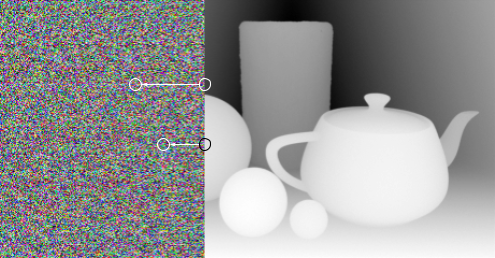

How stereograms work
Normal 3D vision
Human depth perception has a few factors, for example parallax motion and where we have to focus to see something sharply, but perhaps the most important (certainly for this) is binocular vision — that is, how our left and right eyes see slightly different images. You can see this easily (assuming you have two working eyes) by holding up your thumb in front of you and then alternately closing each eye. You should notice the thumb appear to move compared to the background. This might be a surprise if you haven’t done it before, but it’s not hard to visualise why this happens. (If you’re familiar with binocular vision then you can skip this section.)
This helps us see depth, because the angle between the two lines in this diagram depends on how far away the object is:
It’s possible to trick the brain’s binocular vision. All you need is any repeating pattern. A brick wall, say, or some lined paper. The aim is to get each eye to focus on a different iteration of the repeating pattern.
In this example, each eye is focussed on a different light patch of the pattern — but your brain assumes they’re looking at the same thing, because all the light patches look more or less identical and normally when both eyes see the same thing it means they’re looking at the same object. So your brain does the mental geometry and works out that if the eyes are looking in these directions and seeing the same object, then the only place it could possibly be is here:
You can also make the object appear closer than it actually is by doing the same thing the other way around:
Dual-image stereograms
Most 3D images work by showing each eye an entirely different image. 3D glasses and 3D films work by putting both images in the same place and using polarisation or coloured filters to make sure that each eye only sees one of the images. Virtual reality and Victorian stereoscopes work by putting the images very close to the eyes so that each eye only sees one of them, and using lenses to make the images appear to be at a more normal viewing distance.
Clearly, by printing the same part of the image at different positions in the red and blue versions of the image, we can control where the crossing point is, and therefore where you perceive objects to be in 3D space.
It’s worth mentioning that 3D glasses, stereoscopes, VR and 3D films don’t tend to be worked out that way — they just photograph or render a scene from two positions about the same distance apart as your eyes, and everything else falls out naturally. But to understand single-image stereograms, we need to understand it more explicitly.
Single-image stereograms
Single-image stereograms, or autostereograms, also known as Magic Eye pictures, Stare-E-Os, and all manner of other names, have a bit of a problem, which is that they have to show each eye the same picture and still achieve the same effect. They do this by showing a repeating pattern, and varying the width of that pattern.
In this example, we’ve uncrossed our eyes slightly to focus behind the repeating pattern, as you do when looking at an autostereogram. This tricks the brain into thinking that the left eye’s image of block two and the right eye’s image of block three are in fact the same object; similarly the left eye’s image of block three and the right eye’s image of block four, and so on. Because the pattern repeats, this looks plausible enough that you can hold onto the illusion, albeit with a little effort.
By varying the width of the pattern, we’ve made each of these images appear at a different depth. (They’re also moved horizontally, but we can ignore that — that effect is really small in a real stereogram and only looks large here because the geometry is very distorted so you can clearly see the differences.)
The image of blocks 2 and 3 is closest to the observer, because blocks 2 and 3 are closest together. Similarly, blocks 4 and 5 are further apart, resulting in their shared image being further from the observer. By stacking lots of horizontal repeating patterns on top of each other like this, you can make a full 2D image, which will appear to vary in distance from you when you look through it in this way. That’s exactly what a stereogram is.
Making an autostereogram
You need two “source” images to create a stereogram: one “depth map” and one “pattern”. The pattern is just what it sounds like — it’s the repeating pattern whose width we’re going to vary to create the 3D effect. The depth map is an image of the scene in greyscale, where the brightness of each pixel represents not how much light is bouncing off the object, but simply how far away that point is. It’s more or less the fog effect from old videogames.
We can start by putting them next to each other like this, and then move through the depth map section from left to right, at each point looking at the depth map to work out how wide a repeating pattern we want at that point, and then looking that many pixels to the left to see what colour we should be. The pattern on the left is just there to give us a buffer of pixels to pick from — once we get going, we’re sampling from the main stereogram. This is what makes the pattern repeat.
The black circle is near to the viewer, so we want a narrower repeating pattern at that point, so we sample a closer pixel. The white circle is further away, so we sample a pixel further away. (If you’re making a stereogram where the viewer is required to cross their eyes instead of uncrossing them, this would be the other way round.)
Making it nicer
This approach works, but it does mean that you have the pristine pattern on the left, and as it moves across, distortions build up, until the right hand side looks very messy. This isn’t a big issue most of the time, but if your pattern is something recognisable then the image ends up looking asymmetrical, and if your depth map is very complex then the distortions can make the image hard to read — for example, if you have a lot of nearby objects to the left of some far away ones, then by the time the algorithm gets to the far away ones then it might be looking for a pixel 100 pixels away, but all it will have to sample from is the 50-pixel-wide repeating pattern of the nearby object, and you won’t be able to tell what’s happening. Both these problems can be, if not actually solved, then at least ameliorated by putting the repeating pattern in the middle of the image. So first you render the right-hand-side as normal, and then you use that as the pattern to do the left hand side.
This gives you a less distorted pattern in the centre of the image instead of at one side, resulting in a nicer looking and easier to understand image.
Making it even nicer
In practice we do something even more complex than this, but the idea is exactly the same.
Each row of the image is completely independent, so we only need to consider a single one. First we pick a pixel near the middle of the row — I take one around 40% of the way across, because we want to leave a little room in the middle for the clean version of the pattern (and the right hand side of the image is a little nicer than the left). It doesn't really matter what colour this pixel is — as long as we repeat that colour, it can be anything you want — so let's use the colour from the left hand side of (this row of) the pattern.
Next, we look at the pixel one to the right. Depending on the depth we're going for, this will want to repeat a pixel quite a long way to the left of the only other pixel we've coloured in so far — so we get to make up a colour again. So, for example, if the depth of this pixel means it should be repeating the pixel 100 pixels to the left, we want to make sure the pattern loops seamlessly over that width, which means we want to move 1% of the way along the pattern. That way, when we've done 100 pixels, we'll repeat the first pixel and everything will line up.
The pixels to the right of this are easy because we can just repeat previous pixels, as they've all been coloured in.
Next, we want to iterate left. This is a bit harder, because you can't mirror the algorithm from the right hand side. Instead, you need to work out what pattern would have led to the right hand side pixels you've already calculated. So you start with some pixels you've already coloured in, then work out which pixel they would have been repeating, and colour that pixel the same colour.
Then the last thing to do is fill in the gaps — while we were doing the previous step, we probably coloured in a few pixels twice, and left some gaps. The gaps are, effectively, what's "behind" the 3D objects. Nothing repeats them, so they can be anything we like. So we do the same thing we did before: look at the pixel to their left, and iterate along the pattern based on the depth. That pretty well emulates what we should expect the pixel to have looked like if there had been anything repeating it, which makes the whole thing hang together nicely.
You can generate a fully working stereogram using just the basics (and one of the examples in this video is actually made that way — you can tell because the pristine version of the pattern is down the left hand side), but the advanced version of the algorthm lets you make something comparable to the published Magic Eye pictures.
There are other things you can do with this, including making the scene itself repeat, which allows you to use a pattern that effectively colours it in as you go, resulting in full-colour autostereograms, albeting only of rows of repeating objects, but this is how the main kind of single-image stereograms are produced.